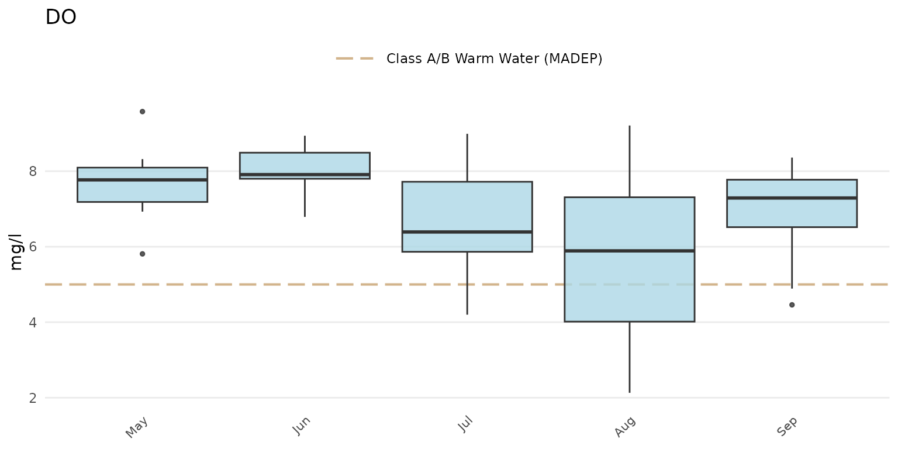
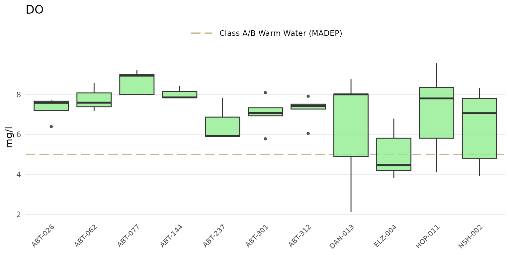
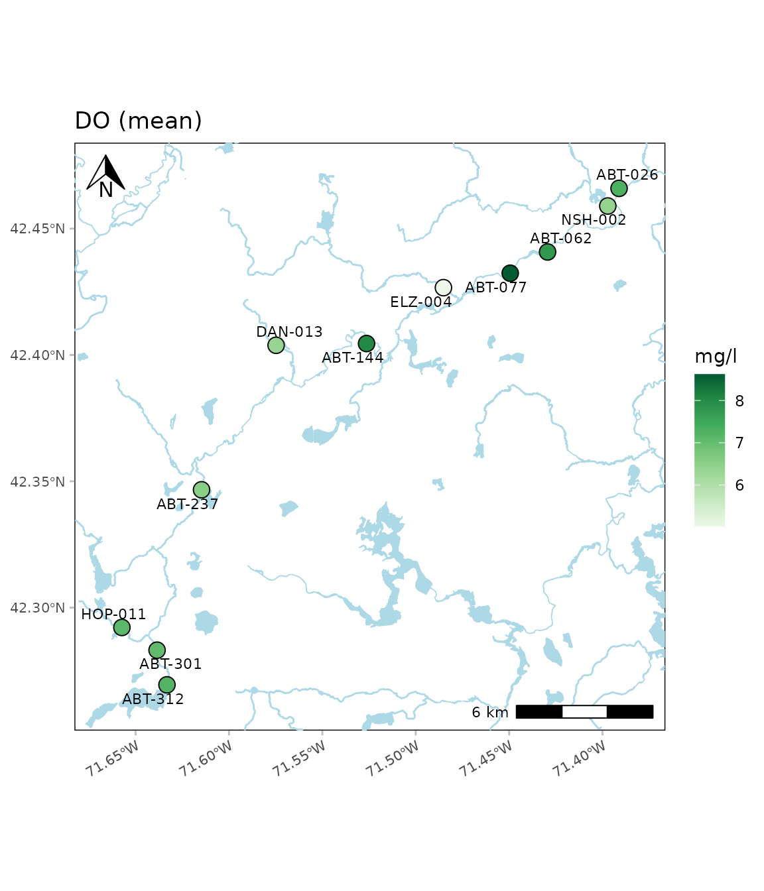
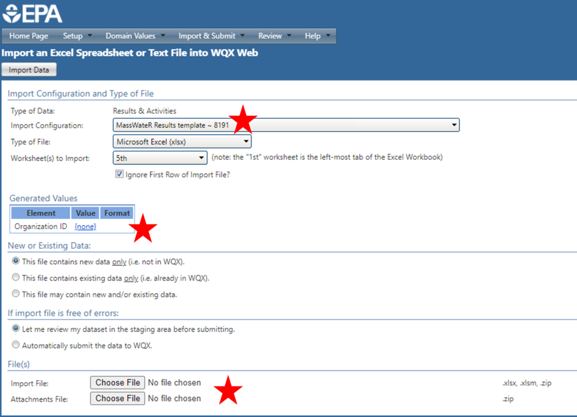

Overview
The MassWateR R package is developed for surface water monitoring data collected by watershed associations and citizen science groups in Massachusetts. The package is created in collaboration with the Massachusetts Bays National Estuary Partnership with funding from an EPA Exchange Network Grant (Grant No. OS-84029801-0).
The objective of the package is to automate and facilitate quality control and exploratory analysis of data intended for upload to the EPA Water Quality Exchange (WQX). The functions provide a streamlined and repeatable means of 1) screening data for quality control, 2) summarizing quality control results, 3) creating graphics for analysis and reports to stakeholders, and 4)formatting data for upload to WQX. The functions are organized around these topics, shown below.

Functions in MassWateR are organized around these topics.
In addition to the content on this web page, the MassWateR Community of Practice forum is a space for users to find help, share ideas, and suggest improvements for the package. Please follow the link to register and login to the forum.
Instructions on installing R and Rstudio can be found here and on the Resources tab.
Package installation
Install the package as follows:
# Install the package
install.packages("MassWateR")Windows PC users may encounter the following warning when installing MassWateR.
WARNING: Rtools is required to build R packages but is not currently installed. Please download and install the appropriate version of Rtools before proceeding: https://cran.r-project.org/bin/windows/Rtools/This warning can be ignored. If desired, RTools can be obtained following the instructions here.
Load the package in an R session after installation:
library(MassWateR)Data inputs
Please view the data inputs and checks vignette for a complete description of the data requirements for MassWateR.
Four types of data are used with the MassWateR package: surface water quality results, data quality objectives (for accuracy, frequency, and completeness), site metadata, and wqx metadata.
The following shows how to specify a path and import each required data file. These are hypothetical files and the path will need to be changed to where your data are located on your computer. Templates with instructions for each of the types of input data are available for download in the Resources tab.
# import results data
respth <- "C:/Documents/MassWateR/MyResults.xlsx"
resdat <- readMWRresults(respth)
# import dqo accuracy data
accpth <- "C:/Documents/MassWateR/MyDQOAccuracy.xlsx"
accdat <- readMWRacc(accpth)
# import dqo frequency and completeness data
frecompth <- "C:/Documents/MassWateR/MyDQOFreCom.xlsx"
frecomdat <- readMWRfrecom(frecompth)
# import site data
sitpth <- "C:/Documents/MassWateR/MySites.xlsx"
sitdat <- readMWRsites(sitpth)
# import WQX meta data
wqxpth <- "C:/Documents/MassWateR/MyWQXMeta.xlsx"
wqxdat <- readMWRwqx(wqxpth)After data are imported, a single data object can be created that can be used with all MassWateR functions.
# a list of input data frames
fsetls <- list(res = resdat, acc = accdat, frecom = frecomdat, sit = sitdat, wqx = wqxdat)The readMWRresultsview() function can be used to help
troubleshoot issues that are encountered importing the water quality
results file. This function can be used to create a .csv spreadsheet
that shows the unique values within columns of the results file. This
information can be used to verify if the values in each conform to the
requirements for the data import checks.
readMWRresultsview(respth = respth, output_dir = getwd())Outlier checks
Please view the outlier checks vignette for a complete description of the outlier check functions in MassWateR.
The anlzMWRoutlier() function can identify outliers for
a selected parameter using boxplots, with the outliers labelled
accordingly.
anlzMWRoutlier(fset = fsetls, param = "DO", group = "month")
Outlier plots for all parameters in the results data file can be
created using the anlzMWRoutlierall() function. This can be
used to create a word document with all plots embedded in the file or as
separate png images saved to a specified directory. Once the function is
done running, a message indicating success and where the file(s) is
located is returned.
anlzMWRoutlierall(fset = fsetls, group = "month", output_dir = getwd())Quality control functions
Please view the quality control functions vignette for a complete description of the quality control functions in MassWateR.
The qcMWRreview() function compiles a report as a Word
document for all quality control checks included in the MassWateR
package. The report shows several tables, including the data quality
objectives files for accuracy, frequency, and completeness, summary
results for all accuracy checks, summary results for all frequency
checks, summary results for all completeness checks, and individual
results for all accuracy checks.
The report can be created as follows. Once the function is done running, a message indicating success and where the file is located is returned. The Word file can be further edited by hand as needed.
qcMWRreview(fset = fsetls, output_dir = getwd())Analyses
Please view the analyses vignette for a complete description of the analysis functions in MassWateR.
The analysis functions in MassWateR can be used to evaluate trends, summaries, and maps.
Analyze results by season:
anlzMWRseason(fset = fsetls, param = "DO", thresh = "fresh")
Analyze results by date:
anlzMWRdate(fset = fsetls, param = "DO", thresh = "fresh", site = c("ABT-026", "ABT-077"))
Analyze data by site:
anlzMWRsite(fset = fsetls, param = "DO", thresh = "fresh")
Analyze results with maps:
anlzMWRmap(fset = fsetls, param = "DO")
Modifying plots
Please view the modifying plots vignette for a complete description of how plots created in MassWateR can be modified by hand. All of the plots created for the outlier and general analysis functions are ggplot2 plots and can be modified accordingly, in addition to the supplied arguments to the core functions.
Water Quality Exchange output
Please view the Water Quality Exchange output vignette for a complete description of creating output for WQX upload with MassWateR.
The single function for generating output for upload to WQX is
tabMWRwqx(). This function will export a single Excel
workbook with three sheets, named “Project”, “Locations”, and “Results”.
The output is populated with as much content as possible, but it is the
responsibility of the user to verify this information is complete and
correct before uploading the data. Additional information may need to be
added by hand. Once the function is done running, a message indicating
success and where the file is located is returned.
Submitting data to Mass DEP
If you are submitting your data to Mass DEP, you must follow all of their instructions as described on their External Data Submittal webpage. Data and QC data can be submitted using either the MassDEP data submission template OR by uploading data to WQX. If you are submitting through WQX you should complete the submission by notifying Mass DEP via email (WQData.Submit@mass.gov). The e-mail must include the group name / project name under which the data was submitted to WQX, a copy of the project QAPP (if not already submitted), a statement of data integrity, the MassWateR QC Report (with the raw data print out), and any other supporting data reports.
Uploading data to WQX
If desired, all rows from the WQX output file (created with
tabMWRwqx()) can be copied and pasted into the WQX
upload template (also available on the Resources
tab), which offers an enhanced spreadsheet layout with more interactive
functionality (e.g., drop-down lists, prompts) and additional tabs with
supporting information (e.g., instructions, field definitions). This
template is especially useful if manual edits to the data are needed
prior to WQX upload.
To upload data to WQX, you will need to create or sign into your WQX account. From there, you can upload your Projects, Locations, and Results spreadsheets individually. Note that Projects and Locations need only be uploaded once for your organization, unless the data change. For each spreadsheet upload, use the appropriate MassWateR custom import configuration, check that your Organization ID is assigned, browse to your upload file, and select Import Data (image below). The next screen will notify you of upload status and prompt you to correct any errors or warnings that arise. More information on error resolution can be found in the WQX User Guide.
